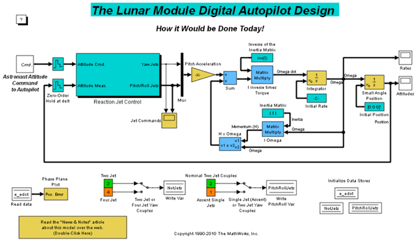
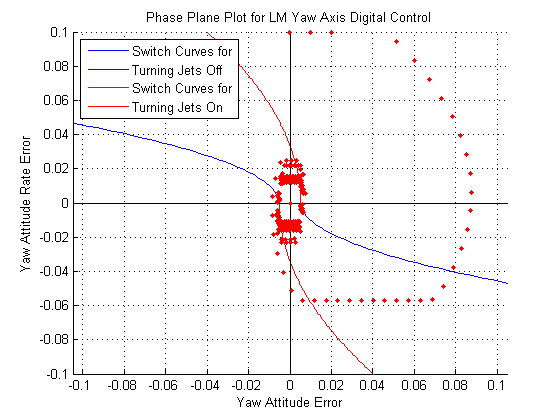

アポロ月着陸船のデジタル自動操縦の開発
このデモでは、アポロの月着陸デジタル自動操縦の設計チームに加わったエンジニアが、1961 年当時に Simulink® を使用できたと仮定した場合、どのようにその設計を行うことができたかを紹介します。
目次
モデルの説明
当時もし Simulink があったなら、アポロ月着陸船の自動操縦の設計期間は驚くほど短縮できたことでしょう。 このモデル内の Stateflow® ブロック線図では、位相面制御アルゴリズム (下記のリンク記事で説明) を実装するロジックが指定されています。 Stateflow ブロック線図は、ブロック線図のどの領域で月着陸船を動かすかによって、Fire_region または Coast_region にあります。 これらの領域間の遷移は、特定のパラメーターに依存します。 Stateflow ブロック線図では、別のステートに遷移するかどうかが決定された後、どの反動ジェットに点火されるのかが計算されます。
aero_dap3dof.mdl モデルを開き、シミュレーションを実行します。
 図 1: 月着陸船のデジタル自動操縦の Simulink ベースの設計
プロジェクトの説明
1961 年当時、デジタル自動操縦の開発は骨の折れる事業でした。必要な産業基盤がほとんど整っておらず、すべてのものが開発途上にありました。 以下は 1999 年夏の MATLAB News & Notes 記事からの抜粋です。
自動操縦のマシン コードが非常に複雑であった理由の 1 つとして、操縦軸を中心とする回転の制御に使用可能なジェットの数が多かったことが挙げられます。 そこで、自動操縦で制御する軸を "ジェット軸" に変更するという決定が下されました。 すると、コードの行数と、既存のコンピューターでの自動操縦のプログラミング能力は、劇的に変化しました。 この改善がなければ、わずか 2000 ワードのストレージでは自動操縦を開発できなかったでしょう。 この変更から得られる教訓は、エンジニアが設計中のシステムでコーディングの機会を与えられた場合、その設計を変更することによってコードを大幅に改善する可能性は大いにあるということです。 プログラマーなら、このような変更を提案することは決してないでしょう。プログラマーは、コード仕様に記述されたものをコーディングするだけだからです。 しかし、MATLAB®、Simulink、および Stateflow を使用すると、設計エンジニアは設計のコーディングも行うことができる (Real-Time Workshop® を使用) ため、設計者とコーディング担当者の溝が狭まります。"